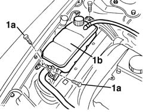
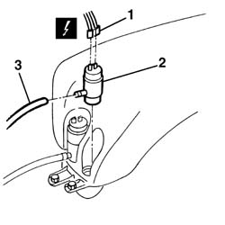

5050B20 windscreen washer electrical pump - r+r
- Path
- Procedures > 50 AUXILIARY UNITS > 5050 SCREEN WASHERS AND HEADLAMP WASH/WIPE > 5050B windscreen wash/wipe > 5050B20 windscreen washer electrical pump - r+r
- Kind
- repair procedure (removal / refitting; the operation number is the code)
- Applies to
- all engines; all production periods
- Interactive page
- https://sloeber94.github.io/elrnDB-a156/en/#/3238362
Applies to: engines: 1.9 JTD 16v; all production periods
 Removing
Removing
 Refitting
RefittingApplies to: engines: 1.6 TS , 1.8 TS, 1.9 JTD 8v , 1.9 JTD 16v, 2.4 JTD 10v; all production periods
1. Unscrew bolts (1a) securing the engine coolant and move the reservoir (1b).

Applies to: engines: 1.6 TS , 1.8 TS, 2.5 V6, 1.9 JTD 8v , 2.4 JTD 10v; all production periods
1. Disconnect the electrical connection for the electric pump.
 | Name | Connector |
|---|---|---|
1 | Windscreen washer pump motor |
2. Remove the electric pump and recover the fluid.
3. Disconnect the fluid supply pipes from the electric pump.

Applies to: all engines; all production periods
Refitting
RemovingCheck that the electric pump is not damaged and, if necessary, conduct an electrical test on it.
Connect the fluid supply pipes to the electric pump.
Fit the electric pump in the housing.
Connect the electrical connection to the electric pump.
Applies to: engines: 1.6 TS , 1.8 TS, 1.9 JTD 8v , 2.4 JTD 10v; all production periods
Position the engine coolant reservoir and secure it using the bolts.
Applies to: engines: 1.6 TS , 1.8 TS, 2.5 V6, 1.9 JTD 8v , 2.4 JTD 10v; all production periods
Refill the reservoir.
Test the operation of the windscreen washer.
Applies to: engines: 1.9 JTD 16v; all production periods
Topics linked from this page (3)
- 7025A12 Engine front sound insulation COVER - R.R.
- 7025A14 Bonnet LID - R.R.
- N20 Windscreen washer pump motor